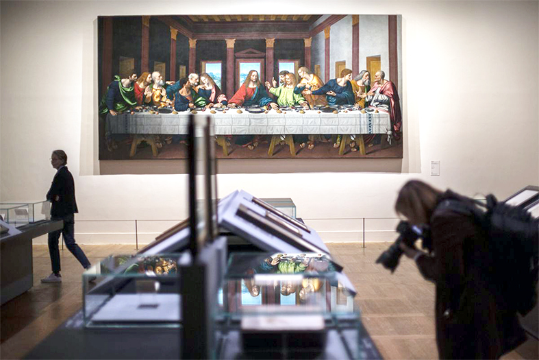
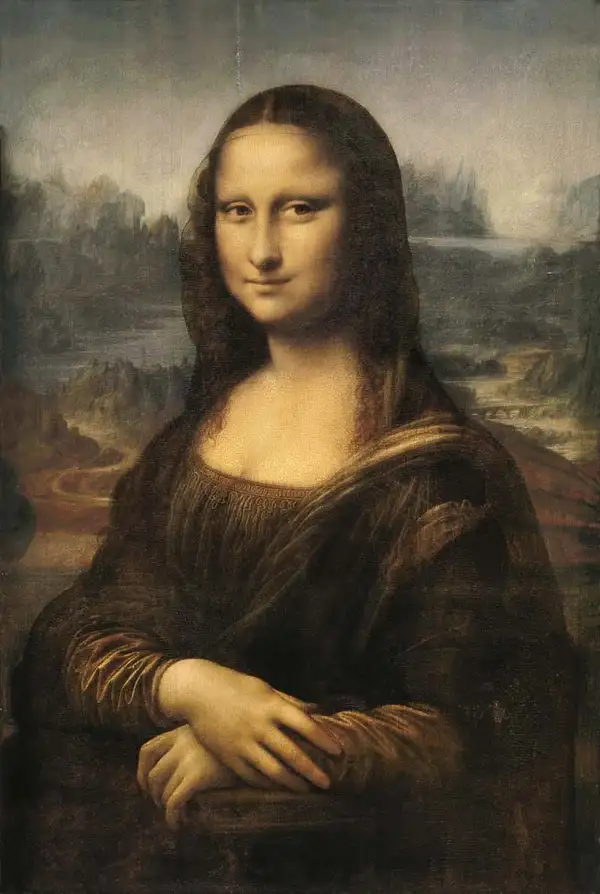
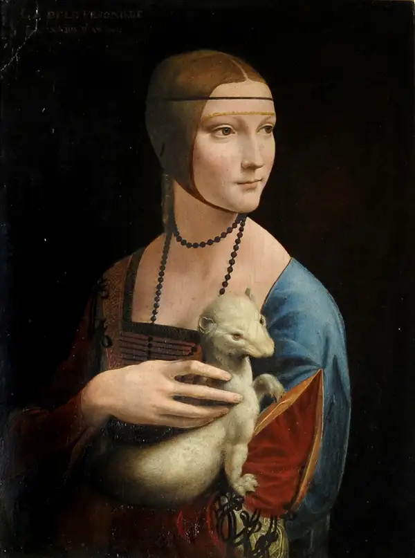
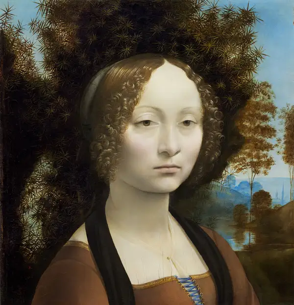

“Bữa ăn tối cuối cùng” hay “Bữa Tiệc Ly” là bức bích họa vô cùng nổi tiếng của danh họa Leonardo da Vinci.
Tác phẩm được sáng tác vào khoảng năm 1495-1498, được đặt ở Tu viện Santa Maria ở thành phố Milano.
Bức tranh mô tả lại một đoạn Kinh Thánh cảnh Đức Chúa Jêsus giữ "Lễ Vượt Qua" cùng với các môn đồ trước khi Ngài bị đóng đinh trên cây thập tự.
Ở bữa ăn tối cuối cùng, Đức Chúa Jêsus (ở chính giữa bức tranh), đang nói với các môn đồ: "Có một người trong các ngươi sẽ phản Ta".
Bức tranh Mona Lisa, còn được gọi là La Gioconda, là một trong những tác phẩm nghệ thuật nổi tiếng nhất của thế giới. Được hoàn thành vào khoảng giữa năm 1503 và 1519 bởi họa sĩ Leonardo da Vinci, bức tranh này hiện đang được trưng bày tại Bảo tàng Louvre ở Paris, Pháp.
Trong bức tranh, chúng ta thấy một người phụ nữ, được cho là Lisa Gherardini, vợ của một thương gia giàu có sống tại Florence, Ý. Cô được vẽ trong một tư thế ngồi, với đôi mắt nhìn trực tiếp vào người xem và một nụ cười nhẹ trên môi. Mặc dù người ta không biết chắc chắn ý nghĩa chính xác của nụ cười đó, nhưng nó đã trở thành một trong những đặc trưng nổi bật của bức tranh.


Tranh Lady with an Ermine - Nàng Cecilia - 1490 - Leonardo Da Vinci (tiếng Ý: Dama con l'ermellino) tại Việt Nam tác phẩm còn được gọi với cái tên “Nàng Cecilia”. Đây là 1 trong 5 tác phẩm để đời của Leonardo, được ông sáng tác vào khoảng năm 1489 - 1490.
Chân dung Cecilia Gallerani của Leonardo Da Vinci, hay còn gọi là “Lady with an Ermine” là một trong những bức tranh sơn dầu nổi tiếng của Da Vinci. Kiệt tác được vẽ từ năm 1483 đến 1490, “Lady with an Ermine” được mô phỏng dựa theo hình bóng của Cecilia Gallerani - tình nhân của Công tước Milan, người bảo hộ nghệ thuật cho Leonardo Da Vinci. Người phụ nữ này lúc ấy chỉ mới mười sáu tuổi,hình ảnh bà được vẽ một cách sống động. Trong bức họa Cecilia đang ôm trọn Ermine bé nhỏ - sinh vật nhanh nhẹn và hoang dã này được biết đến là rất khó nằm yên trong vòng tay của con người. Tuy nhiên nó lại được thuần hóa bởi người phụ nữ trẻ đầy sức lôi cuốn này. Hình ảnh sinh vật này như hình ảnh ẩn dụ về sự gắn bó của Công tước với Cecilia.
Hình ảnh Ermine là hình ảnh ẩn dụ về sự ủy quyền của Ludovico Sforza. Trong tác phẩm của Da Vinci, người đàn ông này được miêu tả như chú cáo bé nhỏ phục tùng người đẹp Cecilia. Tóc của Cecilia được buộc chặt để thu hút sự chú ý vào tỷ lệ phần đầu của người phụ nữ. Sự điêu luyện của Da Vinci về cách phác họa ánh sáng, hình thức, bố cục, sự hài hòa đan xen với bóng tối đã tạo nên điểm nhấn cho tác phẩm này.
Bức tranh chân dung “Ginevra de' Benci” (1474-1478) là tác phẩm chân dung sớm nhất của Leonardo da Vinci. Bức tranh có lẽ được hoàn thành khi ông còn ở xưởng vẽ Verrocchio.
Người phụ nữ trong tranh, Ginevra de' Benci, xuất thân trong gia tộc kinh doanh ngành ngân hàng ở Florence. Năm 1474, bà kết hôn với Luigi Niccolini.
Theo phong tục thời bấy giờ, một cô gái khi kết hôn sẽ vẽ một bức họa chân dung để làm kỷ niệm. Tuy nhiên, người phụ nữ trong bức tranh ăn mặc giản dị, thiếu trang sức và gấm vóc, hơn nữa tranh vẽ chân dung hôn lễ thời bấy giờ thường là tranh vẽ nghiêng. Do đó, có người cho rằng bức tranh này không phải là tranh chân dung hôn lễ, mà có thể nó đã được vẽ sau khi kết hôn. Ngoài ra, trên tờ khai thuế của ông Nicolini năm 1480 có ghi rằng vợ ông bị ốm và được điều trị y tế trong một thời gian dài, điều này có thể giải thích cho nước da nhợt nhạt của người phụ nữ trong bức tranh.
